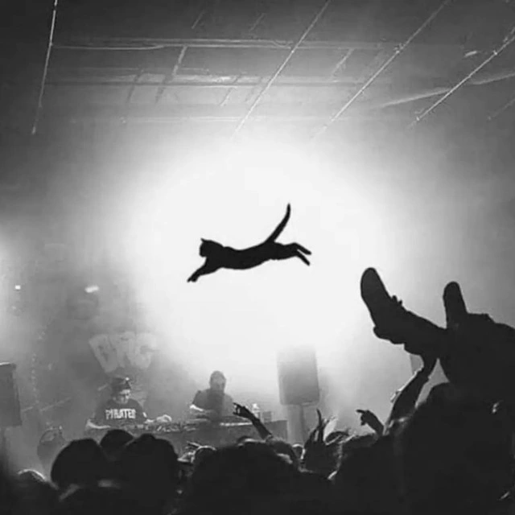

ibuzy projects
ibuzy projects
MIT License
WebPlus IBM MDA
CC BY-SA 4.0
код доступа
войти
запомнить меня
на этом устройстве
ibuzy projects
MIT License
WebPlus IBM MDA
CC BY-SA 4.0
архив заметок
заметок: 0
сортировка
по дате добавления
по алфавиту
по избранным
все заметки зашифрованы. при закрытии сессии избранное будет удалено
← назад